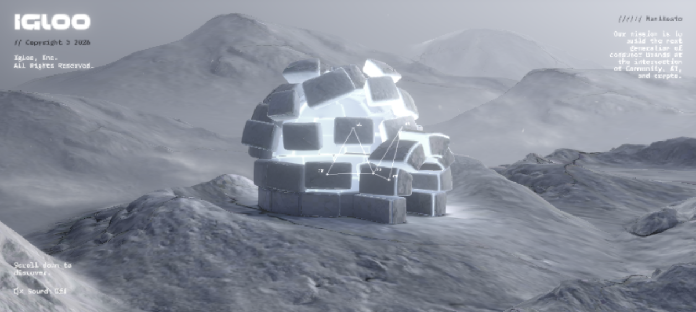
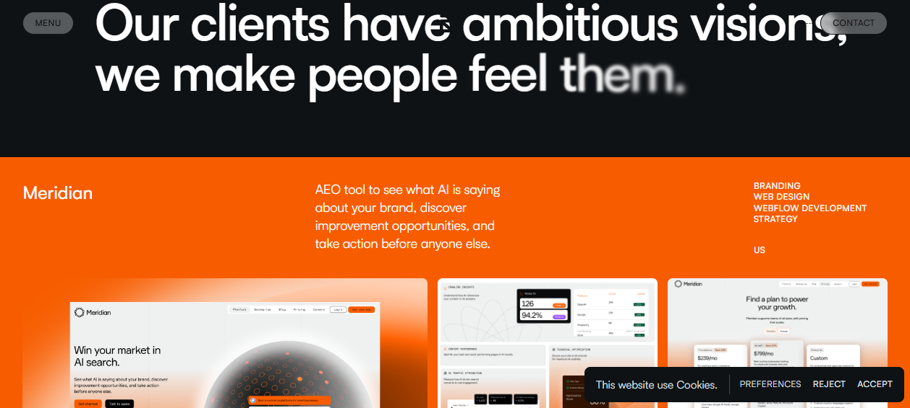

A page that moves.
Motion is the one craft that never survives a screenshot. It is choreography — how the page enters, how scroll becomes a timeline, how a route hands off to the next. Done right it paces the reader and earns the award; done wrong it taxes the main thread and nauseates the visitor.
Scroll is the timeline
The single biggest mental shift in elite motion work: stop treating scroll as "moving a document down" and start treating it as a scrubbable playhead. The scrollbar becomes a 0→1 progress value you bind anything to — camera position, an assembly animation, a video's currentTime, a blur radius.
Lusion ↗ takes this to the extreme: scroll acts as a camera/timeline driver for a WebGL scene — "each scroll feels like a continuation of a bigger story." The hero is effectively pinned while the 3D scene evolves; you are scrubbing a narrative, not a page. Unseen Studio ↗ does the same — scrolling pans the camera through a fixed-stage 3D world (DOM scroll barely moves the visible scene because the scene is the scroll). Obys Agency ↗ runs a synchronized scroll engine where a left name-list, a center media column, and right metadata all advance as one timeline through a fixed "viewfinder" bracket.

Igloo Inc ↗ binds scroll to a scroll-scrubbed assembly — blocks grow and brighten into a domed structure as you scroll, GSAP-timeline-driven rather than CSS. Apple ↗ pioneered the mainstream version: scroll-driven canvas frame-sequences (pre-rendered frames drawn to <canvas> via drawImage(), indexed to scroll), and has since shifted some to scroll-scrubbed compressed video (tie scroll to video.currentTime) — cheaper and smoother.
The universal primitive is a clamped, normalized scroll progress. Everything else is just what you bind it to.
// 0 → 1 progress for any element as it crosses the viewport
function progress(el) {
const r = el.getBoundingClientRect();
const total = window.innerHeight + r.height;
const seen = window.innerHeight - r.top;
return Math.min(1, Math.max(0, seen / total));
}
// Bind it to anything: video scrub, blur, transform, camera.z…
video.currentTime = progress(section) * video.duration;Smooth scroll — the inertia layer
Native scroll is instantaneous and snappy; agency-grade scroll has inertia — a slight weight and ease-out that makes the whole page feel premium. The de-facto tool is now Lenis (from darkroom.engineering), which has displaced the older Locomotive Scroll on most new builds.
Studio Freight / Darkroom ↗ author Lenis themselves — "inertial, eased scrolling is the baseline feel of the whole page." Locomotive ↗'s own current build runs on Lenis (html.lenis, an is-scrolling-up state class). Cuberto ↗ ships Lenis 1.3.23 + GSAP ScrollTrigger — the smooth scroll drives all scroll-triggered animation downstream. 14islands ↗ confirms lenis on <html> and pairs it with their r3f-scroll-rig so one WebGL canvas syncs 1:1 with DOM scroll.
// Lenis: the modern smooth-scroll baseline. Drive GSAP off its frame.
import Lenis from 'lenis';
import gsap from 'gsap';
import { ScrollTrigger } from 'gsap/ScrollTrigger';
gsap.registerPlugin(ScrollTrigger);
const lenis = new Lenis({ lerp: 0.1, smoothWheel: true });
// Single rAF loop — let GSAP's ticker drive Lenis (one clock, no jitter)
lenis.on('scroll', ScrollTrigger.update);
gsap.ticker.add((t) => lenis.raf(t * 1000));
gsap.ticker.lagSmoothing(0);Smooth scroll is a commitment, not a sprinkle. It hijacks the scroll thread, can break position: sticky, anchor jumps, and assistive-tech scrolling, and adds input latency. Always honor prefers-reduced-motion by disabling it, keep keyboard Page Down / Home/End working, and never run it on a content/docs site where readers just want to read — see Lee Robinson ↗, who deliberately ships no Lenis.
Scroll-scrubbing & pinned timelines
A pinned timeline fixes an element in place while scroll advances an internal animation — the section "holds" while content morphs through it, then releases. This is the backbone of scrollytelling.
Igloo Inc ↗ pins the hero stage and scrubs the igloo assembly. Refokus ↗ pins statement lines and scrubs a blur-to-focus reveal — trailing words start Gaussian-blurred and sharpen as you scroll ("we make people feel them"), perfectly on-brand. Basement Studio ↗ wraps GSAP ScrollTrigger in their open-source BSMNT Scrollytelling lib. Cassie Evans ↗ uses ScrollTrigger so each color section animates as it enters the viewport.

// GSAP ScrollTrigger: pin a section and scrub a timeline across it.
const tl = gsap.timeline({
scrollTrigger: {
trigger: '.act',
start: 'top top',
end: '+=150%', // hold for 1.5 viewport-heights of scroll
pin: true, // freeze the section in place
scrub: 1, // tie playhead to scroll (1 = 1s catch-up ease)
},
});
tl.from('.act .word', { filter: 'blur(8px)', opacity: 0.4, stagger: 0.05 })
.to('.act .media', { scale: 1.1 }, 0);For pure CSS, the modern path is scroll-driven animations via animation-timeline: view() — no JS, runs off the compositor:
/* Native CSS scroll-scrubbing — zero JS, compositor-driven. */
@keyframes sharpen { from { filter: blur(8px); opacity:.4 } to { filter:none; opacity:1 } }
.headline {
animation: sharpen linear both;
animation-timeline: view(); /* progress = element in viewport */
animation-range: entry 10% cover 40%; /* map start/end to scroll band */
}Blur-to-focus, the Refokus way — tap to scrub
We make people feel them.
Scroll-triggered reveals
The most common, highest-ROI motion: content fades and rises into view as it enters the viewport. Almost every site in the corpus does it — the craft is in the stagger and the discipline.
Hello Monday ↗ staggers column offsets so cards fade/translate in with amplified rhythm. Dennis Snellenberg ↗ uses GSAP ScrollTrigger for staggered text/line reveals on work rows. Refokus ↗ splits the hero h1 into individual letters (spaced in the DOM) for a per-character staggered entrance. 14islands ↗ splits headlines into per-character/word spans, and crucially keeps reveals CSS-first wherever possible for performance — WebGL only where it earns its weight.
Use IntersectionObserver, not scroll listeners. A scroll handler fires hundreds of times a second on the main thread; an observer fires only at the threshold you care about. Add a once guard so elements don't re-animate on scroll-back, and always set the resting state as the default so a no-JS / reduced-motion visitor sees finished content.
// Robust, cheap reveal — observer + reduced-motion respect.
const reduce = matchMedia('(prefers-reduced-motion: reduce)').matches;
const io = new IntersectionObserver((entries) => {
for (const e of entries) {
if (!e.isIntersecting) continue;
e.target.classList.add('in');
io.unobserve(e.target); // reveal once, then stop watching
}
}, { threshold: 0.15, rootMargin: '0px 0px -10% 0px' });
if (!reduce) document.querySelectorAll('[data-reveal]').forEach((el) => io.observe(el));
// CSS provides the resting state by default; `.in` adds the entrance.Staggered reveal (IntersectionObserver) — scroll into view to replay
Parallax — restraint over spectacle
Parallax (foreground/background moving at different rates) reads as depth and life. The corpus uses it sparingly and structurally, not as confetti.
Dennis Snellenberg ↗ virtualizes the page with Locomotive Scroll (transform-based) and drives parallax via data-scroll attributes — hero text and portrait move at different rates. Jesper Landberg ↗ pins a sticky left-column name to create a scroll-pinned parallax effect as the index scrolls past, plus horizontal-scrolling project images locked against vertically-scrolling titles. Family ↗ floats illustration elements with gentle physics/parallax and idle-bob so the hero feels alive rather than static. 14islands ↗ achieves image distortion + parallax through a single synced WebGL canvas instead of per-image canvases.
/* Pure-CSS parallax — no JS, no scroll handler. Uses 3D transform trick. */
.scene { height:100vh; overflow-y:auto; overflow-x:hidden; perspective:1px; }
.layer { transform: translateZ(0) scale(1); } /* foreground */
.layer.back { transform: translateZ(-1px) scale(2); } /* moves slower */
/* Or, modern: bind translateY to a scroll-driven timeline (see §3). */Parallax is a motion-sickness vector. Large background shifts, multiple competing rates, and fast parallax on mobile are common nausea triggers. Cap displacement (a few dozen px), never parallax body text, and collapse all of it under prefers-reduced-motion.
Page & route transitions
A hard page reload — white flash, layout shift, scroll reset — shatters the spell. Award sites choreograph the handoff between routes so navigation feels like one continuous space.
Dennis Snellenberg ↗ drives full-page transitions with Barba.js — a charcoal background sweeps in to cover, then reveals the next route. Unseen Studio ↗ uses Taxi.js for seamless route changes (no hard reloads between Index / Projects / World). Refokus ↗ documents a BarbaJS-style app-navigation layer over Webflow + GSAP. Robin Noguier ↗ uses React's useTransition for app-like route changes with React-Spring physics, so projects interpolate in. Lusion ↗ keeps a persistent "Back" control implying an SPA transition layer painted over the canvas.
The classic pattern is a two-phase cover / reveal overlay that masks the swap:
// Cover → swap content → reveal. The overlay hides the layout flash.
async function navigate(url) {
await cover.animate(
[{ transform:'translateY(100%)' }, { transform:'translateY(0)' }],
{ duration: 500, easing: 'cubic-bezier(.7,0,.3,1)', fill:'forwards' }
).finished;
const html = await fetch(url).then((r) => r.text());
document.querySelector('main').innerHTML = extractMain(html);
window.scrollTo(0, 0);
await cover.animate(
[{ transform:'translateY(0)' }, { transform:'translateY(-100%)' }],
{ duration: 500, easing: 'cubic-bezier(.7,0,.3,1)', fill:'forwards' }
).finished;
}The View Transitions API
The browser-native answer to all the above — no Barba, no GSAP, near-zero JS. document.startViewTransition() snapshots the old DOM, runs your mutation, and cross-fades (or morphs matched elements) automatically.
Lee Robinson ↗ is the reference: his near-static essay site's only signature motion is the View Transitions API cross-fade between routes, wired to the Next.js App Router — "calm tech," motion reserved for continuity, zero animation libs. Gianmarco Cavallo ↗ uses Astro's ClientRouter / View Transitions with a custom GridTransition so his bento cards morph and reflow between routes on a fully static site.
// Native cross-document View Transitions — opt in with ONE CSS rule.
// Cross-fades between full page loads, no framework required.
@view-transition { navigation: auto; }
/* Morph a specific element (e.g. a hero image) across routes */
.hero-img { view-transition-name: hero; } /* same name on both pages */Same-document (SPA) version, framework-agnostic and what Lee's Next.js setup compiles down to:
// React / Next.js App Router (Lee Robinson's pattern)
if (document.startViewTransition) {
document.startViewTransition(() => router.push(href));
} else {
router.push(href); // graceful fallback, no-op transition
}
// Vue / Nuxt — built in. Just enable it in the config:
// nuxt.config.ts
export default defineNuxtConfig({
experimental: { viewTransition: true },
});
// …then add ::view-transition-old(root) / -new(root) CSS to taste.For a portfolio that is mostly content, the View Transitions API buys an "app-like" polish at essentially zero JS cost and zero main-thread tax. It is the highest value-to-effort motion on this entire page. Add @view-transition { navigation: auto; } and a couple of view-transition-names and you are done.
Easing & the feel of weight
Two animations with identical duration and distance feel completely different based on their easing curve. Nothing in nature moves linearly — linear motion reads as robotic and cheap. The corpus obsesses over this.
Cassie Evans ↗ loads GSAP's CustomBounce / CustomWiggle / CustomEase for bespoke springy, overshooting curves — "motion has weight and personality, not linear tweens." Robin Noguier ↗ mixes React-Spring physics with Bezier-Easing curves where precise easing is wanted. Stripe ↗ codifies easing into design tokens (standardized durations, easings, choreography) so sequences are predictable and reusable — and famously, the CEO requested randomized per-character delays on a typing animation because uniform timing felt non-human.
Same distance, same duration — three easing curves. Press play
cubic-bezier(.22,.61,.36,1) (an ease-out) feels confident and natural. The spring curve (control point >1) overshoots and settles — that overshoot is what reads as "tactile."Default to ease-out for entrances (fast start, gentle settle — the object arrives and relaxes) and ease-in for exits. Reserve overshoot/spring for small, playful, low-stakes elements (buttons, toggles, toy-like UI à la Cassie Evans), not for primary content reveals. Keep durations short: 150–400ms for UI, up to ~600ms for large hero motion.
The motion budget
Every animation costs frames, battery, and — for some users — comfort. The best sites treat motion as a budget they spend deliberately.
Animate only cheap properties
Stripe ↗ states the rule plainly: animate only transform and opacity, never layout properties (width/height/top/left) — those trigger layout + paint on every frame; transform/opacity run on the compositor. Apple ↗'s discipline: "most effects are simple GPU-friendly transforms + timed easing," and content motion is kept separate from graphical motion. Obys Agency ↗ pauses tweens in background tabs and loads a font subset first, full axes after idle — keeping LCP ≈1.3s desktop.
Respect the user — prefers-reduced-motion is non-negotiable
Obys Agency ↗ freezes glyph morphs and swaps slide-ins for fades under reduced-motion. Stripe ↗ evaluates it at runtime. Apple ↗ ships an explicit pause affordance on hero motion — treating "motion is content" and "the user controls content" as the same principle. This page is built the same way: every transition and observer is gated behind the same query, so a reduced-motion visitor gets the finished page with zero animation.
/* The floor every motion site must have. */
@media (prefers-reduced-motion: reduce) {
*, *::before, *::after {
animation-duration: 0.001ms !important;
animation-iteration-count: 1 !important;
transition-duration: 0.001ms !important;
scroll-behavior: auto !important;
}
}// And the JS side: gate every effect behind the same query.
const reduce = matchMedia('(prefers-reduced-motion: reduce)');
function init() {
if (reduce.matches) return; // no Lenis, no ScrollTrigger, no parallax
startLenis(); startReveals(); startParallax();
}
reduce.addEventListener('change', () => location.reload()); // re-evaluate on toggle
init();The budget checklist
- One scroll clock. Lenis → GSAP ticker → ScrollTrigger on a single rAF loop. Competing loops = jitter (the 14islands / Cuberto / Studio Freight pattern).
- Compositor-only props. transform + opacity + filter. Audit with DevTools' paint-flashing.
- Observe, don't poll. IntersectionObserver over scroll listeners; pause off-screen and in background tabs (Obys).
- Resting state is the default. No-JS and reduced-motion users see finished content, never a blank stage.
- Motion must mean something. Apple's test: does it pace the reader / reveal content, or just show off? If the latter, cut it.
- Match motion to brand. Family's bouncy/rounded vs. Lee Robinson's calm cross-fade — both correct, because both match the product.
The full elite stack, distilled: Lenis for the inertia layer → GSAP ScrollTrigger (or native animation-timeline) for scrub/pin/reveal → View Transitions API for route handoffs → tokenized easing for consistent feel → one rAF clock and a hard prefers-reduced-motion gate so none of it costs you a frame you can't afford.